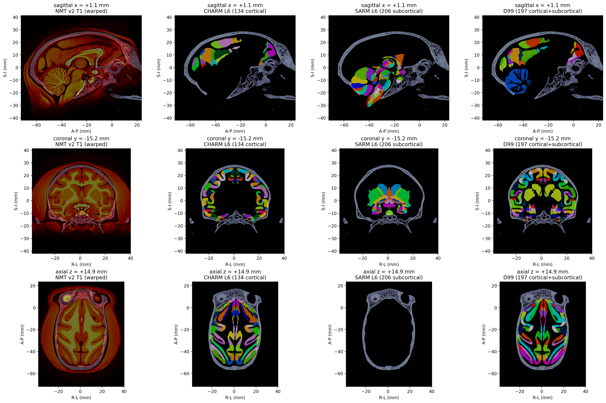
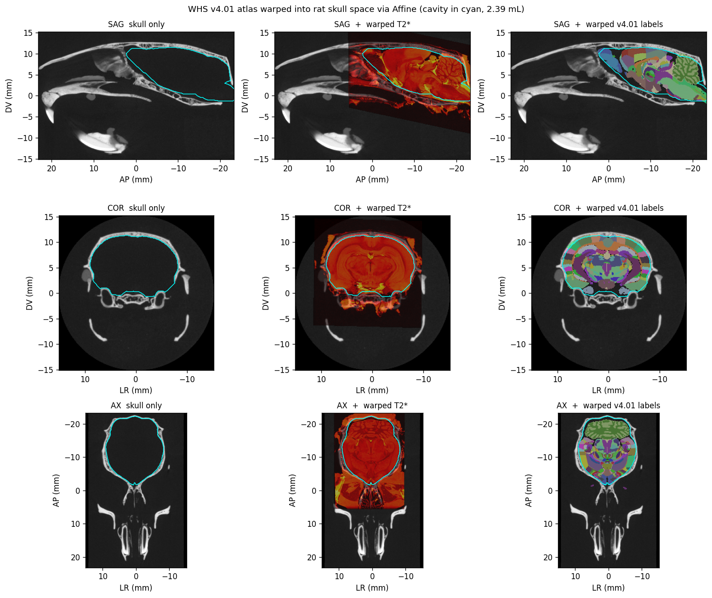

Transcranial ultrasound brain atlas — four species, one pipeline.
TUBA is an open-source Python pipeline that registers a species-specific
skull microCT to its canonical brain atlas, producing the
(geometry, intensity, atlas-label) tuple needed for
transcranial ultrasound simulation. Four species
pillars are operational; they share the same core primitives
(tuba.core.{frame, downsample, align, cavity, registration,
slab, placement}) and differ only in the species-specific
constants encoded in tuba.species.<name>.
Allen CCFv3 T2 template (warm overlay) + 668-region
annotation (categorical palette) warped onto the Maga 4K dry-skull
microCT, with the extracted endocranial cavity (cyan contour,
0.45 mL). ANTs SyN registration. See
mouse validation report.
Macaque — NMT v2 in AMNH M-87264 skull

NMT v2 T1 template + CHARM cortical parcellation
warped into AMNH M-87264 skull space via ANTs Affine (no SyN).
Endocranial cavity 88 mL. See
macaque validation report.
Human — MNI152 + parcellations in Halle skull
Harvard-Oxford 117 + Schaefer 400 + Schaefer 1000
atlases warped onto the Halle Zenodo dry-skull CT (Kirchner 2022)
via ANTs SyN through MNI152. Endocranial cavity ~1300 mL. See
human validation report.
Rat — WHS v4.01 in DigiMorph TMM M-2272 skull

WHS v4.01 SD rat atlas (T2* template + 222-structure
annotation) warped onto the DigiMorph TMM M-2272 skull via ANTs
Affine (cavity in cyan, 2.39 mL). See
rat validation report.
Pipeline at a glance
Fetch skull volume + atlas via the
src/tuba/data/fetch_*.py fetchers (provenance pinned
in sources.toml with SHA-256 checksums).
Orient + downsample into RAS world frame
(tuba.core.frame, tuba.core.downsample).
PCA pre-align when needed (mouse, macaque);
skipped for human and rat after the row/col swap.
Extract cavity: mouse uses hysteresis-threshold;
macaque and rat use the bone-shell builder
(tuba.core.cavity.bone_shell_cavity); human uses
raycast outer-bone surface.
Register the species atlas onto the cavity
(Affine for macaque, rat; SyN for mouse, human).
Load slab: tuba.species.<name>.load_slab()
returns (c, ρ, dz, frame) for the FDTD /
angular-spectrum driver.
Code
from tuba.species import mouse, macaque, human, rat
c, rho, dz, frame = rat.load_slab() # or mouse / macaque / human
B. Jung, P.A. Taylor, J. Seidlitz, C. Sponheim, P. Perkins, L.G. Ungerleider, D. Glen, and A. Messinger, “A comprehensive macaque fMRI pipeline and hierarchical atlas” (NMT v2 + CHARM), NeuroImage235:117997 (2021). doi:10.1016/j.neuroimage.2021.117997